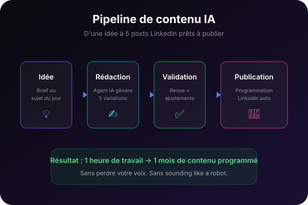

Automatisez votre production de contenu avec un pipeline IA
Arrêtez de rédiger chaque post au jour le jour. Construisez un système qui génère des idées, produit des briefs, rédige des posts et les reformate pour chaque canal — en moins d'une heure par semaine.

Pour qui ?
- Créateurs de contenu qui publient sur plusieurs canaux
- Community managers et marketers en solo ou en petite équipe
- Entrepreneurs qui veulent rester visibles sans y consacrer des demi-journées
Outils abordés
- ChatGPT / Claude
- Notion / Airtable
- Make / Zapier
- Buffer ou équivalent
Prérequis
Connaître les bases de l'IA conversationnelle
Ce que vous apprendrez
Module 1 — Auditer votre production actuelle
Identifier les goulets d'étranglement et les tâches répétitives.
Module 2 — Structurer un calendrier de contenu IA
Créer un système d'idées, de briefs et de planification fiable.
Module 3 — Générer et reformater du contenu
Produire des posts, carrousels, newsletters et scripts adaptés à chaque canal.
Module 4 — Relier les outils avec des automatisations
Connecter Notion, Airtable, Google Sheets, Buffer ou Make selon votre stack.
Module 5 — Maintenir la qualité sans y passer sa semaine
Valider, ajuster et industrialiser le pipeline sur le long terme.
Programme détaillé
1Module 1 — Auditer votre production actuelle
1.1 Cartographier votre workflow de contenu
Lister les étapes, outils et délais de votre production actuelle.
1.2 Identifier les tâches répétitives et faible valeur
Repérer ce que l'IA peut produire ou accélérer sans perdre en qualité.
1.3 Définir vos 3 canaux prioritaires
Choisir les formats et canaux sur lesquels concentrer l'automatisation.
2Module 2 — Structurer un calendrier de contenu IA
2.1 Construire une base d'idées durable
Créer un système de capture et de priorisation des idées.
2.2 Du brief à la ligne éditoriale
Rédiger des briefs clairs que l'IA peut utiliser pour garder votre voix.
2.3 Planifier une semaine de contenu en 10 min
Organiser les publications sur une semaine avec calendrier et validation.
3Module 3 — Générer et reformater du contenu
3.1 Générer des posts LinkedIn et carrousels
Produire des brouillons engageants à partir d'un brief.
3.2 Adapter le contenu aux newsletters et blogs
Reformater un même sujet en formats longs et courts.
3.3 Créer des scripts vidéo et hooks
Générer des scripts et accroches adaptés à votre style.
4Module 4 — Relier les outils avec des automatisations
4.1 Connecter votre base de contenu
Relier Notion, Airtable ou Sheets au pipeline.
4.2 Automatiser la génération et la publication
Créer un scénario Make/Zapier qui produit et envoie le contenu.
4.3 Ajouter les étapes de relecture et validation
Intégrer des garde-fous humains avant publication.
5Module 5 — Maintenir la qualité sans y passer sa semaine
5.1 Mesurer l'engagement et ajuster
Suivre les indicateurs et itérer sur les formats.
5.2 Documenter le pipeline
Créer un playbook d'utilisation et de maintenance.
5.3 Planifier l'évolution sur 90 jours
Définir les prochaines améliorations et automations.
Bénéfices concrets
Une semaine de contenu générée en moins d'une heure
Un système réutilisable d'une semaine à l'autre
Des formats adaptés à LinkedIn, Instagram, newsletters, blog, etc.
Moins de blanc, plus de régularité, une meilleure visibilité
Passez au niveau supérieur pour accéder à cette formation
Cette formation est incluse dans l'offre Builder. Rejoignez-la pour accéder au contenu complet, aux templates et aux exercices pratiques.